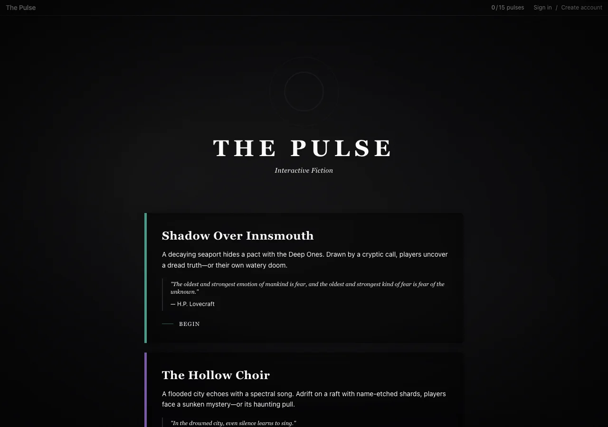
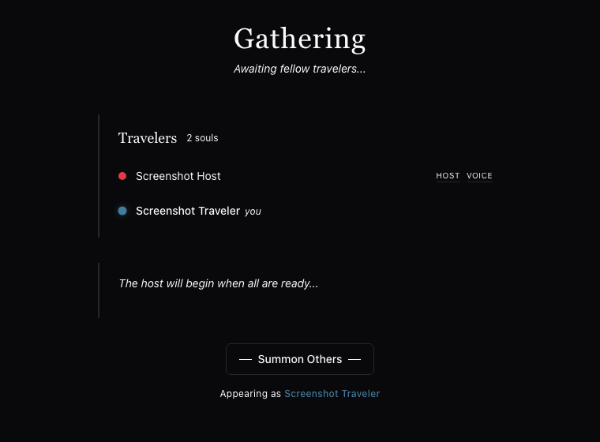
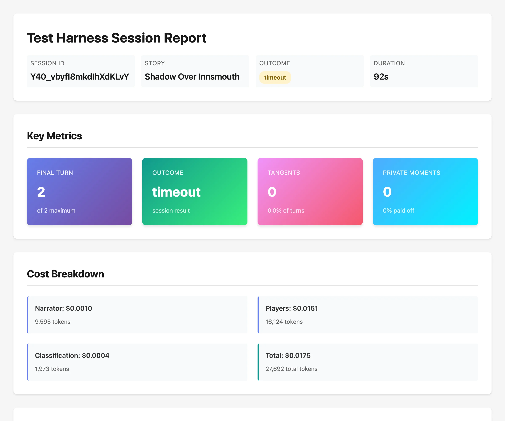
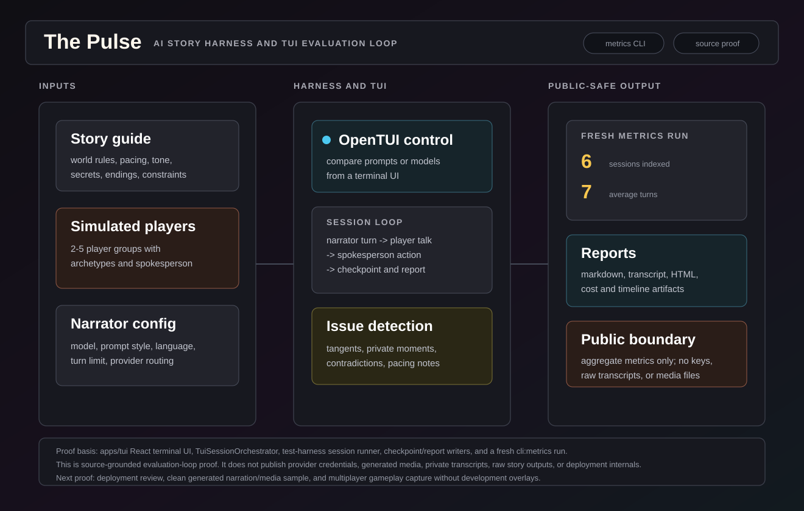

Problem
Most AI storytelling stops at a prompt and a chat box. A real product needs curated worlds, player flow, multiplayer coordination, a narrator with constraints, and generated media — but the hard, unglamorous problem is quality. "Is this narrator any good?" is not a vibe; it needs to be measured across models, prompts, and stories, or every change is a guess.
What I Built
The Pulse started from the Vercel AI chatbot template and grew into a story-game platform: a curated world selector, solo and multiplayer sessions with invite rooms and a spokesperson flow, an AI narrator with story guides and agency-preserving constraints, model/provider routing, and multimodal output — voice narration, image generation, and ambient audio tied to the story. It is live and the repo is public.
- ProductWorld selector, solo/multiplayer, invite rooms, lobby, spokesperson flow.
- Narrator systemStory guides, agency constraints, model routing, voice, images, ambience.
- EvaluationSimulated player groups, quality metrics, per-role cost, model comparison.
The story, playing
This is a real session, played live on the site. The narrator sets the scene, you type what you do in plain language, and it responds to that specific choice — then keeps the world consistent across turns. Below is one full turn of Shadow Over Innsmouth: the opening, my action, and the narrator answering it.

"The February fog rolls thick over the Massachusetts coastline as your bus groans to a halt at the edge of a world that seems to have forgotten the twentieth century exists. The driver — a gaunt man with darting eyes — doesn't look at you when he mutters, 'End of the line.'… The letter you carry feels heavier in your coat pocket. Its message remains legible: 'Come to Innsmouth. The sea remembers what the land forgets.'"The narrator's actual prose, verbatim from the session above — the AI writing, not a scripted line.
The Product

the-pulse.games. It shows the product as curated interactive fiction — each world has a premise and an epigraph, and you begin in one tap — not a raw chat prompt.
The Playtest Harness
This is the piece that makes The Pulse an engineering project and not a demo. The harness spins up a whole session with no humans: it simulates a group of AI players, runs the narrator against them turn by turn, saves checkpoints, and produces a report. It measures narration quality with real signals — did players go off on tangents, did private character moments pay off, how did the session end — and it accounts for cost per role (narrator vs. players vs. classification tokens). Swap the narrator model or prompt style and the harness tells you whether it got better, worse, or cheaper.


One world, three ways in
Shadow Over Innsmouth shows up across my interactive-fiction work: here in The Pulse as a live multiplayer AI narration, in Anima as a point-and-click game with AI-generated art, and authored underneath both in StoryScript. The same story, taken three different ways, is how I pressure-test what "AI storytelling" can actually be.
Technical Decisions
- Treat the narrator as a product surface with rules, tone, pacing, and agency constraints — not a freeform chatbot.
- Separate story guides from prompt styles so a world can be run against several narrator models.
- Build a harness that simulates player groups, so quality is measured instead of vibed — with cost accounted per role.
- Tie voice, images, and ambience to the story beat rather than bolting media on as decoration.
- Coordinate multiplayer through rooms and a spokesperson action, so a group shares one coherent narration.
What This Proves
The Pulse is product taste and AI-system rigor in one project: a live, multimodal, multiplayer story game, and the evaluation discipline to know whether the AI at its center is actually good. The harness is the tell — I treat narrative quality as something to measure, not assert.
Public Evidence
- Live at
the-pulse.games— homepage and worlds load without auth. - Public repo with the story-game platform and the test harness.
- The multiplayer lobby and room flow, shown above.
- A real harness session report with quality metrics and per-role token cost.
- Six recorded harness sessions aggregated by the metrics CLI; full harness and transcripts on request.
Boundary
Worlds and epigraphs shown are original or public-domain. Provider keys, raw transcripts, generated media, and deployment internals stay private; the running product, repo, and harness reports are public.